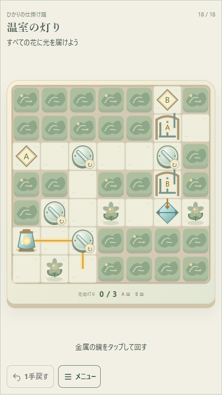
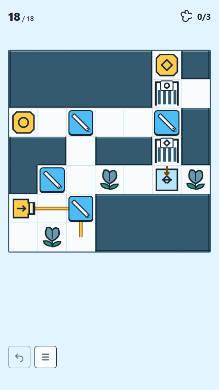
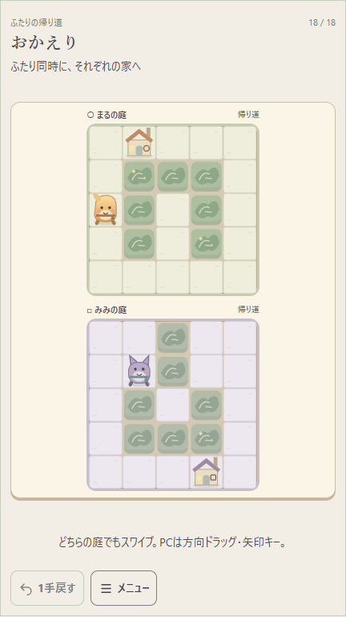
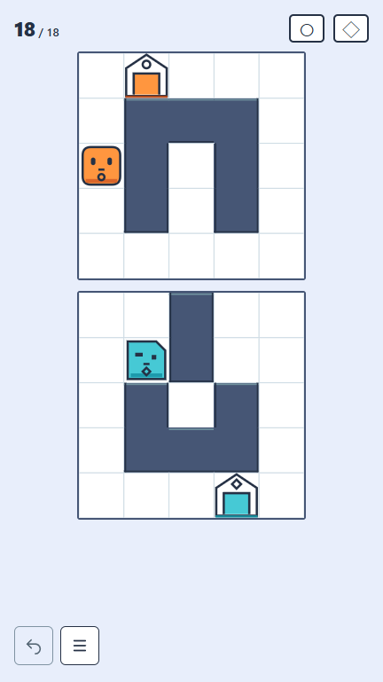
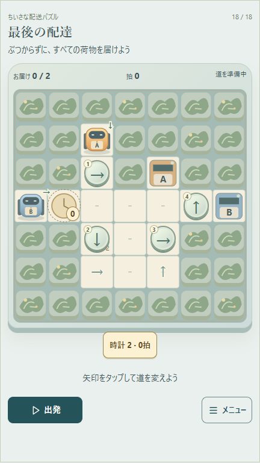
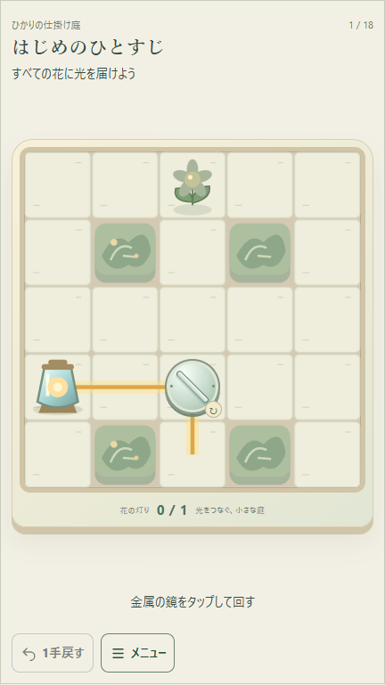
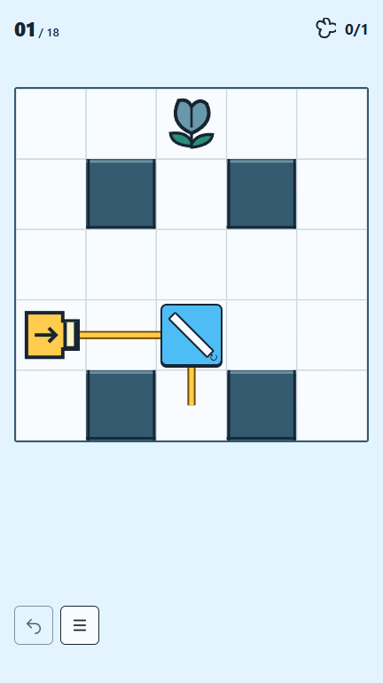
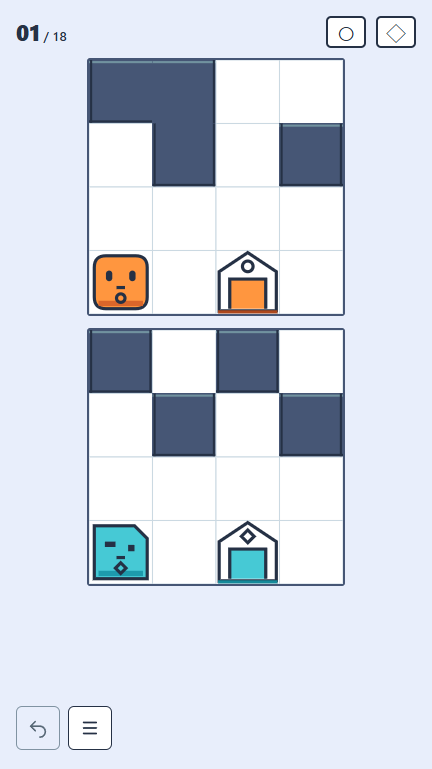
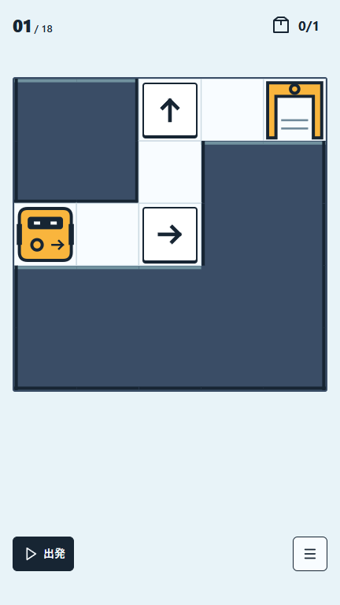
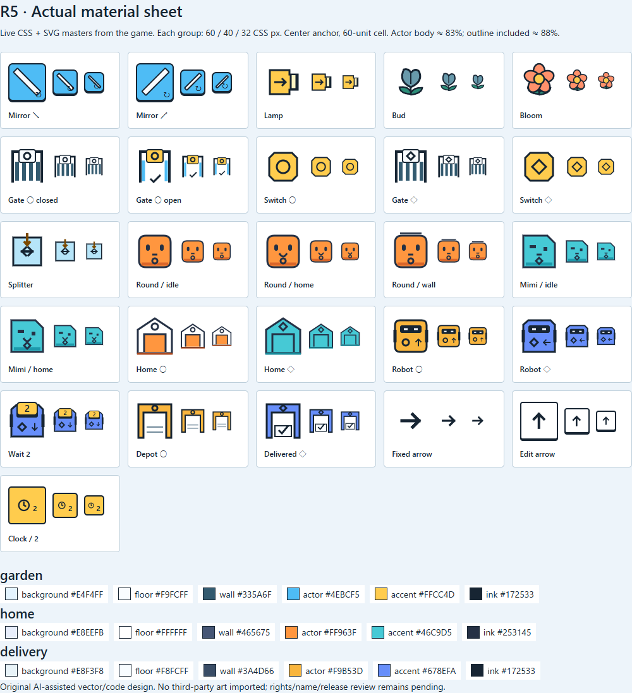

Batch 01 · R5 Visual Language
3作品・54問。新しいArt、最小HUD、直接操作、通常／縦／横を一つに統合。
R5 Visual Language Human Acceptance PASS · 2026-09-15
gpt-6-astra · R4操作／54問／日英／3表示 KEEP · 公開ゲーム0
gpt-6-astra · R4操作／54問／日英／3表示 KEEP · 公開ゲーム0
試遊
現在の保存をそのまま使います。初回案内は各作品の1面、密度の高い終盤は18面。☰ → 面一覧で選べます。Help内の「盤面の案内を再表示」でcueを確認でき、方向ボタンも選択できます。
| 作品／言語 | 通常 | 縦 9:16 | 横 16:9 |
|---|---|---|---|
| ひかりの仕掛け庭 · 日本語 | 遊ぶ ↗ | 遊ぶ ↗ | 遊ぶ ↗ |
| ひかりの仕掛け庭 · English | 遊ぶ ↗ | 遊ぶ ↗ | 遊ぶ ↗ |
| ふたりの帰り道 · 日本語 | 遊ぶ ↗ | 遊ぶ ↗ | 遊ぶ ↗ |
| ふたりの帰り道 · English | 遊ぶ ↗ | 遊ぶ ↗ | 遊ぶ ↗ |
| ちいさな配送パズル · 日本語 | 遊ぶ ↗ | 遊ぶ ↗ | 遊ぶ ↗ |
| ちいさな配送パズル · English | 遊ぶ ↗ | 遊ぶ ↗ | 遊ぶ ↗ |
両サーバーは127.0.0.1限定。撮影枠が端末より広い場合は「通常へ戻る」を使用。別ポートや別profileの保存とは共有しません。
同条件のR4 → R5
18面・初期状態・日語。両側とも432×768 CSS px／DPR1、同じ倍率。画像を開くと元サイズです。
ひかりの仕掛け庭


ふたりの帰り道


ちいさな配送パズル


導入1面の同条件比較
ひかりの仕掛け庭


ふたりの帰り道


ちいさな配送パズル


3本の短い実操作動画
無音・実入力。432×768のcropのみ。ここでは最大320px幅で表示します。
タップ → 開花 → Undo
5.9秒の動画を開く共通swipe → 片側停止 → 二人帰宅
7.8秒の動画を開く直接編集 → 衝突 → 待機調整 → 配達
10.5秒の動画を開く実素材と制作規則
実素材シートを開く · 次作向けの短いレシピ。60／40／32 CSS px、通常・帰宅・開門・待機・配達状態を実masterから生成。
素材シートを見る

3作品 × 通常／縦／横：代表9画面
ひかりの仕掛け庭 · 18面

ふたりの帰り道 · 18面


ちいさな配送パズル · 18面


英語・狭幅・D-pad・Help・状態・Securityの詳細


ふたりの帰り道


ちいさな配送パズル


縦のD-pad · R5意味／入力 · 状態保持 · 保存異常・停止回帰 · 全54問再生 · 日英・3表示 · 狭幅84ケース · 保全 · 値を含まないSecurity根拠

Security raw scan: FAIL（既知1候補）／Human判定: FALSE POSITIVE / NON-CREDENTIAL / APPROVED
対象：.tmp/r3-before/manifest.json の generic-api-key。2026-09-15に保全用SHA256である5条件を再確認。今回の1候補だけをHumanが承認。raw検出を保持し、自動除外・新しい例外追加はしていません。詳しくは報告書から個別判定記録へ。
採用済みVisual方向と残るGate
- 色・輪郭・キャラクター・質感が望むゲーム品質へ変わったか。
- 最初の操作へ進め、Help／Undo／出発を迷わず使えるか。
- 小さい通常画面と縦横の動画でも、操作と結果が読めるか。
R5のVisual方向は正式採用。上記の理解・迷い・使いやすさに関する初見ユーザー受入と全54問のゲーム性受入は別Gateです。
物理スマホ、Safari／Firefox、初見ユーザー理解・楽しさ、実投稿UI、集客、全54問のHuman受入、法務・公開はNOT TESTED／PENDING。技術PASSをHuman受入へ拡大しません。